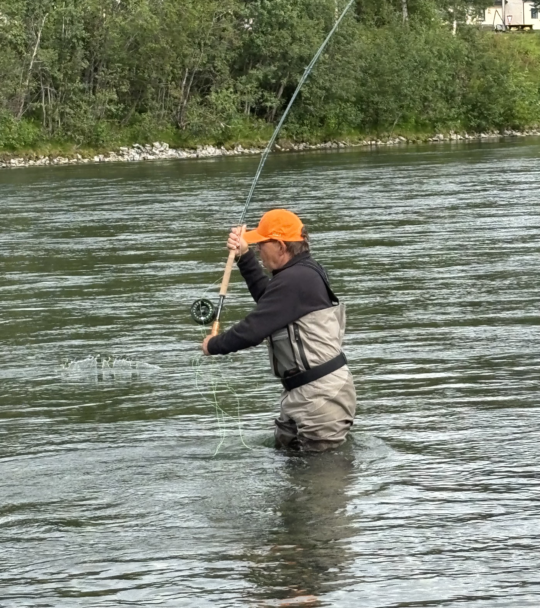
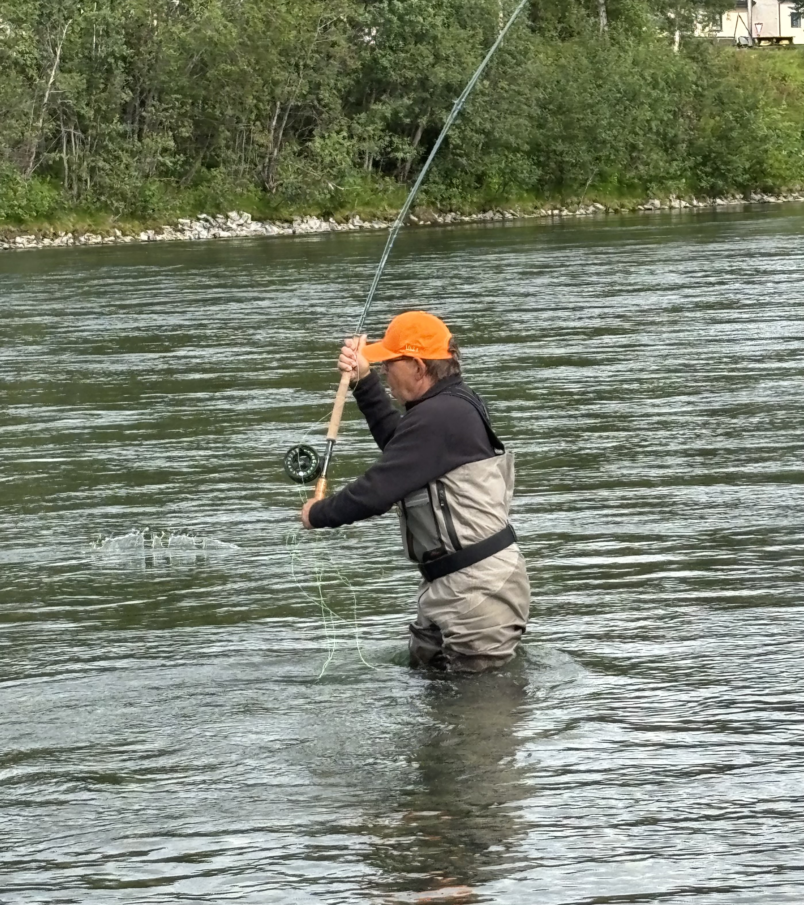

Welcome to Kirkesnes Laksefiske
Experience salmon fishing in the beautiful Målselva river in Northern Norway. Målselva is one of the best salmon rivers in Norway both in size and amounts of salmon. Our fishing area offers 8 unique zones, great facilities, and a rich history. Whether you are a seasoned angler or a beginner, you will find the perfect spot here. The area is easily accessible, with a 20 minute drive from the nearest airport at Bardufoss, and a 2 hour drive from Tromsø.
- Season: June 15 – August 26
- Booking: Contact us


 
